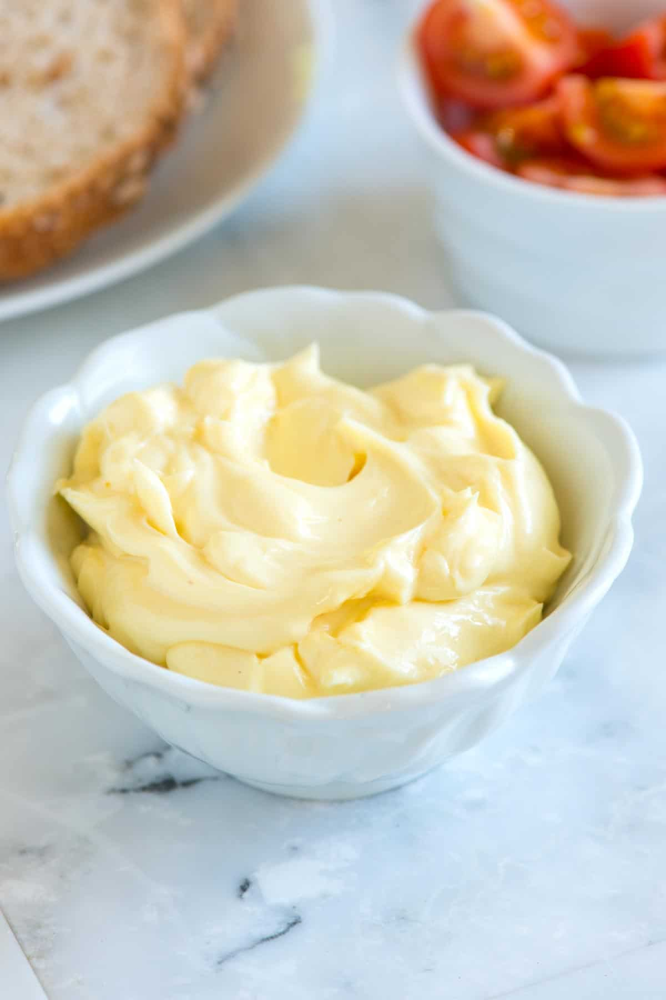

Mayonnaise

Description
I grew up watching my mum making mayonnaise, it used to be yummy! Util she no longer bothered making anymore and instead got her fave brand of mayo
Making mayo is not as easy as it seems, it can go terribly wrong and send us to hospital
Ingredients
- One egg
- Mustard, pepper and salt to taste
- Sunflower oil
- Lemon
Steps
- Add an egg to your food processor
- Process it for a few seconds and add some mustard and salt
- Add oil very very slowly, so it mixes well
- Taste the mayo and add some lemon juice
- If you like it spicy you can add some tabasco sauce or even some garlic to empower its taste!